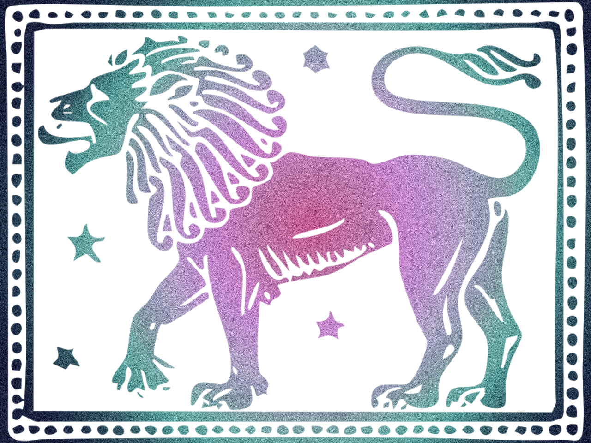
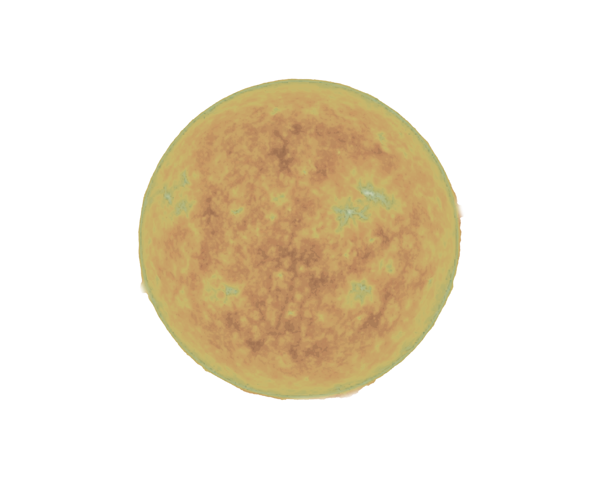

Leo:
Your essential purpose in life is to bring warmth, light, and vitality to whatever you regard as important. Thus you generate more brightnes and creativity. In order to achieve this, you have a radiance, aninner glow, that quite magiclly draws the attention of others. The same quality then lends an air of certainty to whatever it is that you have involved yourself with. What could be called your royal seal of approval bestows a confidence upon woever or whatever meets your favour.
The trouble is that your curse is as disatrous as your blessing is great. And the che curse if Leo, of course, pride. Your pride makes you vulnerable to being taken in vain, and when you feel taken in vain, your bright sun goes behind a dark cloud. Some leos are even born with their sun behinf that cloud. And when it comes out again, you are very wary of criticism - you disdainfully ignotr ot patronizingly put in its place.
However, when you are the Leo who does put your pride aside, and realizes that the sun cannot see its own shadows and so gracefully accepts constructive advice or criticism, uou become like the sun itself - itterly inextinguishable, ever-giving and ever-war, funny and romantic, the noble ruler, the creative teacher - the healing heart. You, of all signs, have the light. All you need do is shine.
Your essential purpose in life is to bring warmth, light, and vitality to whatever you regard as important. Thus you generate more brightnes and creativity. In order to achieve this, you have a radiance, aninner glow, that quite magiclly draws the attention of others. The same quality then lends an air of certainty to whatever it is that you have involved yourself with. What could be called your royal seal of approval bestows a confidence upon woever or whatever meets your favour.
The trouble is that your curse is as disatrous as your blessing is great. And the che curse if Leo, of course, pride. Your pride makes you vulnerable to being taken in vain, and when you feel taken in vain, your bright sun goes behind a dark cloud. Some leos are even born with their sun behinf that cloud. And when it comes out again, you are very wary of criticism - you disdainfully ignotr ot patronizingly put in its place.
However, when you are the Leo who does put your pride aside, and realizes that the sun cannot see its own shadows and so gracefully accepts constructive advice or criticism, uou become like the sun itself - itterly inextinguishable, ever-giving and ever-war, funny and romantic, the noble ruler, the creative teacher - the healing heart. You, of all signs, have the light. All you need do is shine.